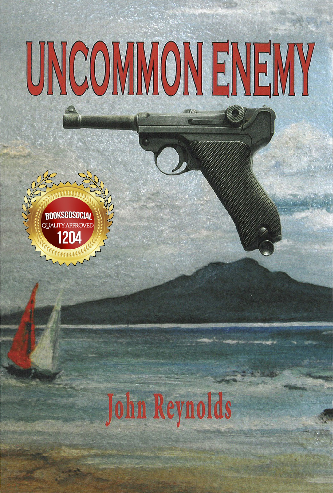
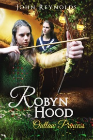
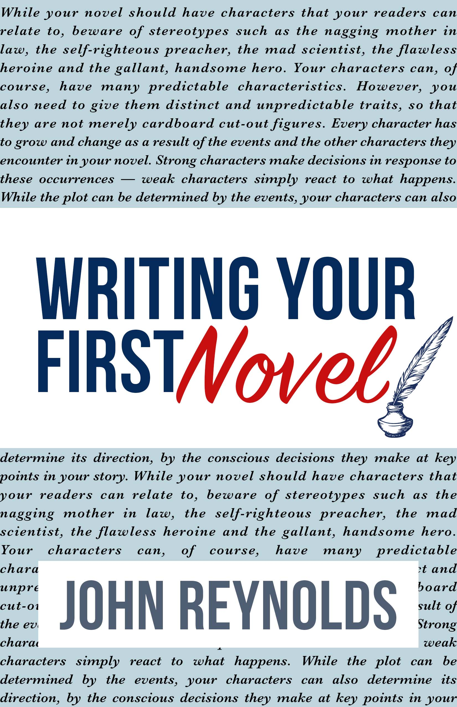

01
EASTERN EUROPE · COLD WAR
A close call in East Berlin
A young traveller, a divided city and a run-in with the authorities that could have ended very differently.
BEHIND THE IRON CURTAIN
From London piano bars to Cold War border crossings, from the Zambezi to home in New Zealand — one remarkable life, told with humour, curiosity and heart.
And some storytellers know exactly how to tell them.
At twenty-two, John Reynolds set out from New Zealand with a teaching diploma and an appetite for adventure. The year was 1964. He had no idea how far the journey would take him.
There were close calls behind the Iron Curtain, unforgettable encounters in Africa, music played in English pubs, and a lifetime of work in teaching, broadcasting, filmmaking and writing.
In With Both Feet gathers those experiences into a funny, generous and thoughtful memoir about saying yes to life — even when you cannot know what comes next.
Discover where to get a copyIn With Both Feet is hugely entertaining, warm and witty, and offers genuine reflection and much humour.
The places were extraordinary. The people made them unforgettable. Here is a taste of the journeys inside.
A young traveller, a divided city and a run-in with the authorities that could have ended very differently.
From wildlife encounters in Zimbabwe to a tense moment on the river, the adventure did not always follow the plan.
Teaching by day, making music in London pubs, and finding stories in the ordinary as well as the extraordinary.
Travel, laughter, danger, music and a life of curiosity. Find your copy of In With Both Feet.
For a personally signed paperback, contact John directly by email.
Stories of imagined worlds, altered histories and practical advice for those with a story of their own.

What if New Zealand had fallen under Nazi occupation? A chilling alternate history.
View book details
A modern schoolgirl lands in medieval Sherwood Forest — and leads a band of outlaws.
View book details
A practical, approachable guide for aspiring writers, drawing on John's own craft.
View book detailsDr John Reynolds is an Auckland-based New Zealand author, teacher, songwriter and broadcaster whose working life has taken him across countries, cultures and creative disciplines.
His journey has included teaching in England, Canada and Zimbabwe; writing novels and musicals; making films; and completing a PhD at the University of Auckland. Through it all, the stories kept coming.
Today John continues to write and to share his love of storytelling with readers and community groups.
Read John's author interviewFor signed copies, author talks, book enquiries or simply to say hello, John would love to hear from you.
Email John